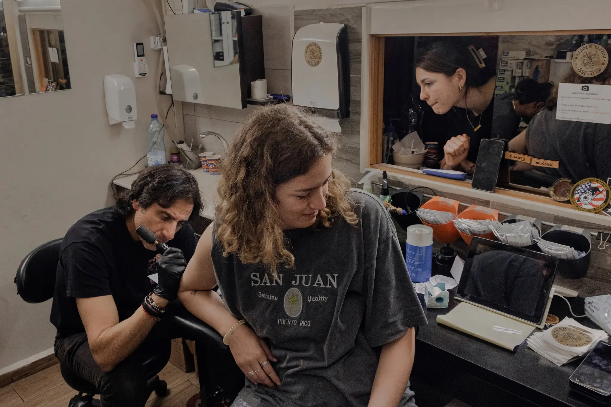
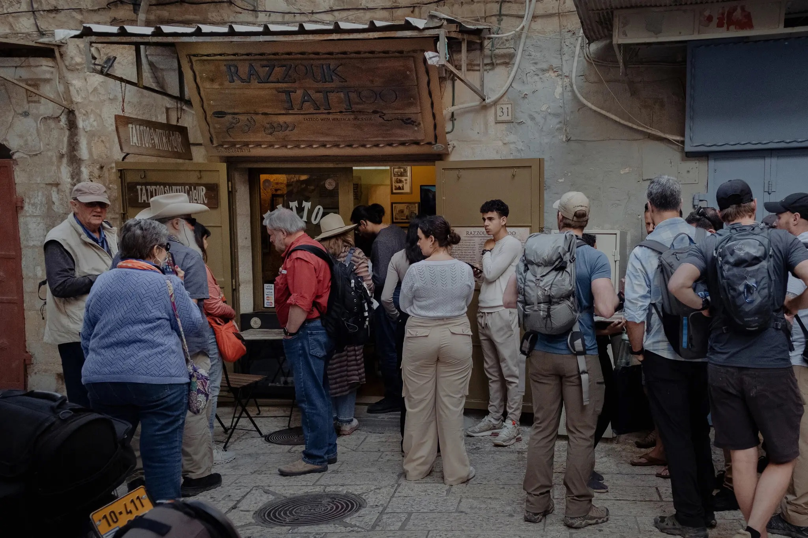

Tattoo Artist Inks Pilgrims, Priests and Those Scarred by Conflict
For Wassim Razzouk, Holy Week is his busiest time as Christians seek a reminder of their visit to Jerusalem. But his family’s centuries-old tattoo business caters to all faiths.
Source: The New York Times
Wassim Razzouk, left, working on a tattoo for Kathryn O’Brien, a student from Texas. Some visitors to Jerusalem “want a tattoo as a certificate of pilgrimage,” he said.
JERUSALEM — A Jewish man who may have been drunk once asked him to tattoo “kosher” in Hebrew on his butt. His oldest customer was a woman of 101. Members of the U.S. Secret Service often stop by to sample his handiwork when they’re in town.
He has also been a regular participant in Healing Ink, a project providing free tattoos to cover the scars sustained by survivors of terrorist attacks and by Israeli soldiers injured in combat.
But during Holy Week and the days leading up to it, Wassim Razzouk’s tattoo parlor in Jerusalem’s Old City is packed with some of his most reliable customers: Easter visitors who, seeking an indelible reminder of their time in Jerusalem, “want a tattoo as a certificate of pilgrimage,” Mr. Razzouk said.
One customer, Kathryn O’Brien, a 20-year-old student from Texas, deliberated between getting inked with an image depicting either the Last Supper or the Crucifixion. Her friend Emily Rodriguez, 20, also from Texas, settled on a more contemporary impression, spelling out the title of a popular Christian song, “Through & Through,” the black lettering ascending her arm.
Getting his first tattoo, Steve Ferguson, an Episcopalian priest in his 70s, opted for a Christian fish symbol merging into a Star of David and a menorah, a design intended to illustrate, he said, his affinity for Israel and the Jewish people.
Jerusalem has been especially tense in recent days, before the rare convergence this weekend of Passover, Easter and Ramadan, and amid a surge in violence. Those tensions flared again on Friday when Palestinians threw stones at the police, who responded with sound grenades and rubber bullets. More than 100 Palestinians and several Israeli officers were reported injured.
Since March 22, there have been four attacks in four Israeli cities, involving five Arab assailants who have killed 14 people. About 20 Palestinians have been killed by Israeli fire during the same period, most while committing or trying to commit an attack, according to the Israeli authorities, or in clashes during Israeli counterterror operations in the occupied West Bank.
The Old City, in predominantly Palestinian East Jerusalem, has long been a crucible of friction. Captured from Jordan in the Arab-Israeli War of 1967, the area was later annexed by Israel in a move that was never internationally recognized. Palestinian leaders covet it as the capital of a future state and much of the world considers it occupied.
- Wassim Razzouk
Mr. Razzouk’s tiny store is something of a haven amid all the hostility, a symbol of religious and political tolerance.
“I have tattooed Christians, Palestinians, Ethiopians, Israelis — believe it or not, I’ve tattooed an Orthodox Jew with sidelocks,” said Mr. Razzouk, who identifies as a member of the Palestinian Christian minority. “I’ve tattooed nuns, atheists and bishops.”
As dusk fell on a recent evening, the ink machine at his shop was still buzzing as more customers gathered in the cobbled alley outside, waiting their turn.
While tattoos may have moved into the global mainstream only in the last few decades, the Razzouk family has been practicing the art form a little bit longer: 700 years, or 27 generations, he said. He’s the scion of a long-venerated family of tattoo artists, Coptic Christians who, as family lore has it, came on a pilgrimage from Egypt to the Holy Land hundreds of years ago, and decided to stay in Jerusalem and set up shop.
Mr. Razzouk — with his long hair, Harley-Davidson biker’s jacket and passion for motorcycles — decided to follow in the family tradition at the age of 33. His two sisters and the cousins of his generation were not interested in becoming tattoo artists, he said, adding, “I knew that if it wasn’t for me the tradition would disappear.”
His father, Anton, 82, taught him the craft, having learned it from his father, Jacob, or Yaqoub.
Tattooing is generally considered forbidden in both Islam and Judaism, and for many Jews, tattoos stir disturbing memories of the numbers etched into the arms of victims of the Holocaust. But tattooing is now wildly popular among Jewish Israeli hipsters, and Mr. Razzouk said some young Palestinian Muslims now wanted tattoos as well, influenced by the Russian prison ones they have seen in movies.
He sends customers seeking more contemporary designs to a studio he opened a few weeks ago in predominantly Jewish West Jerusalem. It caters mainly to the local market, which prefers more realism in body art, and is run by his wife, Gabrielle, and an employee he trained.
Source: The New York Times
Outside the Razzouk Tattoo shop in Jerusalem. The city has been especially tense in recent days, ahead of the rare convergence of Passover, Easter and Ramadan, and amid a surge in violence.
“If somebody wants a Russian star or a pistol or a Kalashnikov,” Mr. Razzouk said, “it is not appropriate to tattoo them alongside a pilgrim in their 70s getting a cross.”
He opened the new store, which also offers piercing, to diversify after two difficult years of the pandemic. Tattoo parlors were shuttered for the first year, and for much of the second year, Israel was largely closed to foreign tourists and pilgrims.
Now they are coming back.
While a tattoo parlor may seem an unlikely station on a pilgrim’s route, the Razzouk family business has long been popular — under Ottoman, British, Jordanian and now more than half a century of Israeli rule.
The business is renowned for its continued use of the Razzouks’ centuries-old, hand-carved wooden stamps as stencils to guide the tattooist’s hand. The most popular images remain variations of the Jerusalem cross, an emblem of the crusades that is a cross of four equal sides with four smaller crosses drawn in each of its quadrants.
“Crosses are not easy to do,” Mr. Razzouk said, because of the straight lines.
For some religious customers, a stop at Razzouk Tattoo is almost a spiritual rite on the voyage to the Holy Land.
“To walk in and be inspired by someone’s art is exciting,” said Ms. O’Brien, the student from Texas, who went with the Last Supper. “I was seeing something unique that I couldn’t get anywhere else.”
Mr. Ferguson, the Episcopal priest, left uplifted, describing the experience as “a great tradition.”
Razzouk Tattoo in the Old City occupies a two-roomed, cavelike space with a stone, domed ceiling near Jaffa Gate. Mr. Razzouk moved here about six years ago from his grandfather’s original studio deeper in the Christian Quarter of the Old City, which was up steep stairs and harder to reach.
Mr. Razzouk said that while he wanted to adapt the business to make it “bigger, more modern and more professional,” he added that he was committed to preserving the family heritage, which he called a “gift.”
Dozens of antique stamps are stored in a glass case. A framed entry from the 2022 Guinness Book of Records declares Razzouk the world’s longest-running tattoo business.
Customers can leaf through two books, one with the traditional designs from the antique stamps, another with other designs, including various types of crosses and religious symbols and some more modern designs, such as “Love and Peace” in Arabic calligraphy.

Source: The New York Times
Steve Ferguson, an Episcopal priest from Texas, got his first tattoo at Mr. Razzouk’s shop. The design features a Christian fish symbol merging into a Star of David and a menorah.C
A poster commemorates Mr. Razzouk’s role in Healing Ink, a project started in 2016 by the advocacy group Artists 4 Israel. His participation has drawn criticism from some staunch supporters of the Palestinian cause.
“My answer is always the same,” he said. “I tell them I don’t need your judgment.” He added that Healing Ink “is a beautiful experience and one of the most humanitarian things we have done.”
He has known trauma up close. Growing up as a teenager in the shadow of the first Palestinian intifada, or uprising, Mr. Razzouk lost a friend who went out to throw stones at an Israeli settler bus and was fatally shot.
More recently, a Jewish Israeli customer postponed an appointment. His girlfriend called to say that he had been involved in a Palestinian stabbing attack. When he finally arrived, after a delay of several months, Mr. Razzouk saw two scars on his upper body.
As for the man who wanted a “kosher” brand on his behind, Mr. Razzouk said he had checked that the customer was sure before getting down to work.
Mr. Razzouk has found his own way of transcending the conflict, without ignoring its complexities. His chief identity today, he said, is as the founder of the Holy Land Bikers Motorcycle Club. Its members include Christians and Muslims, he said, and they ride in coalition with all types of Israeli motorcycle groups and have connections throughout the Arab world.
And he has trained the 28th generation of Razzouk tattooers: His sons — Anton, 21, and Nizar, 19 — work in the shop.